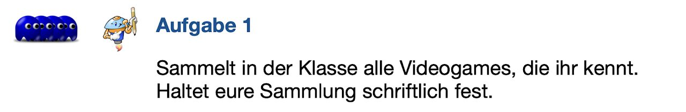
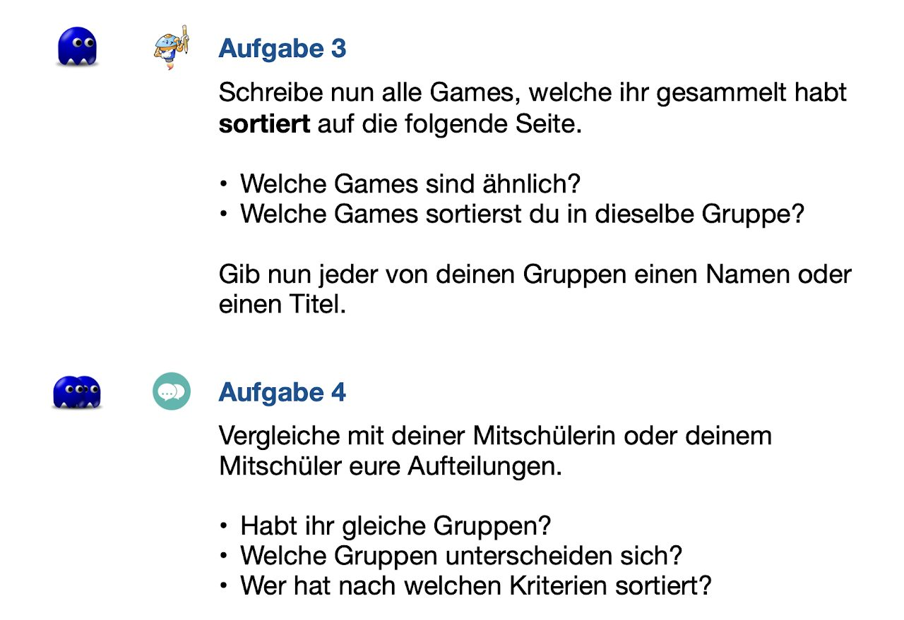
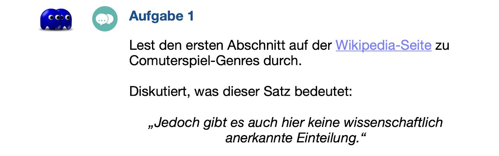
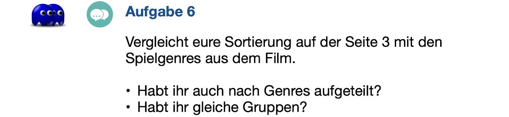
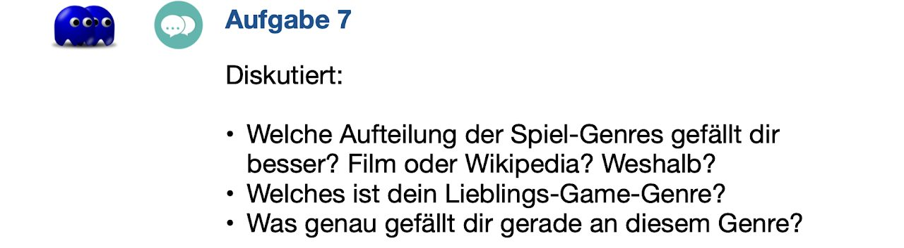
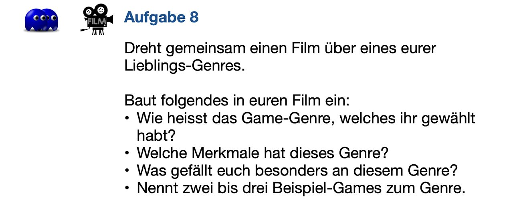
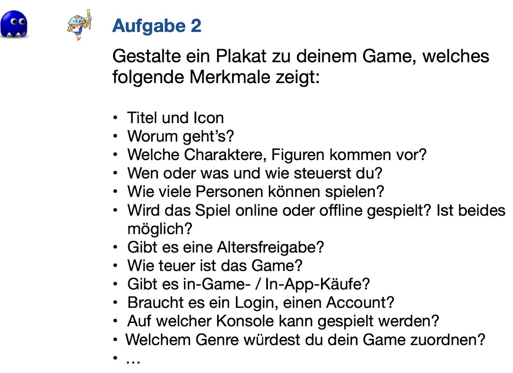

Die Thematisierung von Game-Genres in der Schule schafft einen strukturierten und kritischen Zugang zur Spielewelt, der weit über das reine Konsumieren hinausgeht. Schülerinnen und Schüler lernen, Spiele inhaltlich zu analysieren, Mechaniken zu verstehen und reflektierte Entscheidungen zu treffen. Dies stärkt nicht nur ihre Medienkompetenz, sondern ermöglicht auch eine kreative und vielseitige Auseinandersetzung mit Themen aus anderen Bildungsbereichen.
Darüber hinaus hilft das Verständnis von Genres dabei, persönliche Interessen und Stärken der Schülerinnen und Schüler zu erkennen und wertzuschätzen. Sie entdecken, welche Genres ihren Vorlieben und Fähigkeiten entsprechen, was ihre individuelle Entwicklung unterstützt. Gleichzeitig fördert es Toleranz und Respekt gegenüber den Vorlieben anderer, was den sozialen Zusammenhalt in der Klassengemeinschaft stärkt.
Was muss ich über Game-Genres wissen?
Videogames unterscheiden sich im Spielziel, in den Spielinhalten, in der Spielmechanik, in der Art der Interaktion, ... Deshalb werden Videospiele in verschiedene Genres aufgeteilt. Es gibt aber keine einheitliche, wissenschaftlich anerkannte Einteilung.
Hier sind trotzdem einige gängige Genres aufgeführt:
Action: Actionspiele sind aufregend und dynamisch. Sie beinhalten oft Kämpfe, Schießen oder schnelle Bewegungen. Beispiele sind "Call of Duty" oder "Super Mario Bros."
Abenteuer: Abenteuerspiele erzählen eine Geschichte und lassen den Spieler in eine fesselnde Welt eintauchen. Man muss Rätsel lösen und Hindernisse überwinden. Beispiele sind "The Legend of Zelda" oder "Uncharted".
Rollenspiel (RPG): Rollenspiele ermöglichen es dir, einen Charakter zu erstellen und dessen Fähigkeiten und Eigenschaften zu entwickeln, während du eine epische Geschichte erlebst. Beispiele sind "Final Fantasy" oder "The Elder Scrolls".
Strategie: Strategie-Spiele erfordern taktisches Denken und Planung. Du kontrollierst Ressourcen, baust Basen auf und führst Kriege oder erobere Territorien. Beispiele sind "Civilization" oder "StarCraft".
Sport: Sportspiele simulieren verschiedene Sportarten wie Fußball, Basketball oder Rennspiele. Du kannst entweder gegen den Computer oder andere Spieler antreten. Beispiele sind "FIFA" oder "NBA 2K".
Puzzle: Puzzle-Spiele konzentrieren sich auf das Lösen von Rätseln oder das Knacken von Codes. Sie erfordern oft logisches Denken und Geschicklichkeit. Beispiele sind "Tetris" oder "Candy Crush".
Simulation: Simulationspiele ahmen reale Aktivitäten oder Situationen nach, wie zum Beispiel Flugsimulatoren, Städtebau oder Landwirtschaftssimulationen. Beispiele sind "Flight Simulator" oder "SimCity".
Das sind nur einige Beispiele, und es gibt noch viele weitere Genres. Jedes Genre bietet unterschiedliche Spielerlebnisse und Herausforderungen.
Wie können Game-Genres im Unterricht thematisiert werden?
Neben den auf dieser Seite aufgeführten fertigen Unterrichtseinheiten zur Einführung der Game-Genres und zu den Merkmalen der Games sind hier noch einige weitere Unterrichtsideen aufgeführt:
Game-Genre-Turnier
Aktivität: Spiele aus verschiedenen Genres ausprobieren
Ein Turnier, bei dem die Klasse Spiele aus unterschiedlichen Genres ausprobiert (digital oder analog).
Diskussion:
Welches Genre war am unterhaltsamsten? Warum?
Was haben die Spiele über Problemlösestrategien oder Teamarbeit vermittelt?
Mögliche Fachintegration:
Bewegung und Sport: Kombination mit Bewegungsspielen (z. B. Geschicklichkeitsspiele nachstellen).
Soziales Lernen: Zusammenarbeit in Multiplayer- oder Team-Spielen.
Verbindung mit Geschichte und aktuellen Themen
Aktivität: Spiel und Realität
Schülerinnen und Schüler recherchieren, wie ein Genre reale Themen darstellt, z. B.:
Historische Spiele: Wie genau sind historische Simulationen? (z. B. Assassin’s Creed).
Kulturelle Themen: Wie repräsentieren Spiele Kulturen oder soziale Themen, wie z.B. Krieg und Flucht? (z. B. When We Disappear, Valiant Hearts).
Die Schülerinnen und Schüler analysieren, ob Spiele realistische Darstellungen liefern und wie sie Wahrnehmungen beeinflussen.
Fachintegration:
Geschichte: Analyse historischer Genauigkeit.
Deutsch/Ethik: Reflexion über ethische Fragestellungen in Spielen.
Schreiben und entwickeln
Aktivität: Geschichten schreiben
Schülerinnen und Schüler schreiben Kurzgeschichten, die in einem bestimmten Genre angesiedelt sind.
Anschliessend überlegen sie, wie diese Geschichten in ein Spiel umgesetzt werden könnten.
Fachintegration:
Deutsch: Förderung der Schreibkompetenz und kreativen Ausdrucks.
nformatik: Digitale Umsetzung der Geschichten als Spiel.
Einführung Game-Genres und Merkmale von Games (fertige Unterrichtseinheiten)
Unterrichtseinheit: Welche Videogame-Genres gibt es?PDF · 1,9 MB Unterrichtseinheit: Welche Merkmale haben Games?PDF · 1,4 MBWelche Videogame-Genres gibt es?
Teile Videospiele in Gruppen auf.
Vergleiche deine Aufteilung mit der Wikipedia-Aufteilung und der Aufteilung deiner Mitschülerinnen und Mitschüler.
Lerne die Merkmale verschiedener Spielgenres kennen.
Produziere einen kurzen Videoclip zu einem Game-Genre.
Welche Merkmale haben Games?
Erforsche verschiedene Merkmale von Games.
Untersuche ein Game nach seinen Merkmalen.
Gestalte ein Plakat zu den Merkmalen eines Games.
Hinweise für die Lehrperson (Genres)
Hinweise für die Lehrperson (Merkmale)
Nützliche Links
https://esports.suisseedu.ch/module/modul-1-genres-und-spielarten
Welche Videogame-Genres gibt es? - Tipps und Lösungen für Lehrpersonen
Games sortieren - Seite 2 & 3

Solche Sammlungen lassen sich analog oder digital machen.
Gerade digitale Sammlungen eigenen sich auch gut als zeitunabhängige Aufgabe als Vorbereitung für den Unterricht.
analoge Sammlung
an der Wandtafel
mit Zetteln
am Flip-Chart
digitale Sammlung

Es gibt keine "falsche" Sortierung. Alle Arten von Sortierung sind erlaubt und möglich, alphabetisch, nach Beliebtheitsgrad, ... Es kann jedoch diskutiert werden, wann welche Einteilung mehr Sinn macht.
Neben der persönlichen Auseinandersetzung mit den Games üben die SuS bei diesen Aufgaben gleich auch ihre informatischen Kompetenzen, indem sie Daten strukturieren und ordnen.
Game-Genres kennen lernen - Seiten 4 - 7

Zum Wikipedia-Artikel
Im Netz finden sich viele verschiedene Game-Genre-Aufteilungen. Es gibt keine wirkliche überall gültige und anerkannte Einteilung. Viele Spiele enthalten Merkmale aus verschiedenen Genres und lassen sich drum auch nur schlecht zuteilen. Um über Games zu sprechen, macht es aber dennoch Sinn einzelne Genres kennen zu lernen und sich mit Spielmerkmalen auseinanderzusetzen.
Lösung zu Seite 4/5PDF · 2,4 MBLösung zu Seite 4/5
Bei den Unterkategorien gibt es jeweils noch weitere Unterteilungen. Diese sind bei den Lösungen nicht aufgeführt, können aber von den SuS auch aufgelistet werden. Hier lohnt sich eine kurze Erklärung zu der Strukturierung in Kategorien, Unterkategorien und in weitere Unterkategorien.
Die Zuordnung in der Spalte "Beispiel-Games" lässt sich nicht immer sauber machen. Manche Games lassen sich zu verschiedenen Kategorien zuordnen. SuS dürfen verschiedenen Lösungsansätze anwenden und austauschen.
Lösung zu Seite 6PDF · 3,3 MBLösung zu Seite 6
Bei der Aufgabe 4 füllen die SuS die Spalten "Spielgenres" und "Merkmal" aus.
Bei der Aufgabe 5 (auf Seite 7) wird dann erst die Spalte "Wikipedia" ausgefüllt und so ein Vergleich zur Genre-Aufteilung auf Wikipedia gezogen. So wird nochmals deutlich, dass es mehrere Aufteilungsmöglichkeiten bei den Game-Genres gibt.

Die SuS vergleichen Ihre eigene Spiel-Sortierung auf Seite 3 mit der Aufteilung aus dem YouTube-Clip. Gemeinsamkeiten können farblich hervorgehoben werden.
Wichtig ist es hier nochmals zu betonen, dass es keine falschen Sortierungen gibt, sondern dass sich lediglich die Eigenschaften, nach denen sortiert wurde, ändern.

Die Aufgabe 7 kann auch gut im Plenum gelöst werden. Sie dient als Vorbereitung auf die Aufgabe 8.

Die Aufgabe 8 dient als Abschlussaufgabe des Themenblocks und kann auch zur Bewertung genutzt werden. Bitte gib in diesem Falle deinen SuS genau bekannt, nach welchen Kritierien ihr kurzer Film bewertet wird. Neben den inhaltlichen Aspekten kann hier auch die Kameraführung, die Bildschärfe, die Tonqualität, ... in die Bewertung miteinfliessen.
Anleitungen zur Filmproduktion mit dem iPad
https://meta.ipadschule.ch/video/ - allgemein
https://ipadschule.ch/clips/ - App Clips
https://ipadschule.ch/imovie/ - App iMovie
Anleitung zur Filmproduktion mit WinTablets
https://meta.wintablets.ch/video/ - allgemein
https://wintablets.ch/video-editor/ - Foto-App
Anleitung zur online-basierten Filmproduktion mit Adobe Express
https://meta.wintablets.ch/adobe-spark-video/
https://helpx.adobe.com/ch_de/express/using/create-video.html
Merkmale von Games - Tipps und Lösungen für Lehrpersonen

Merkmale von Games
Die aufgeführten Merkmale helfen Schülerinnen und Schülern ein Game differenzierter zu verstehen und besser zu entscheiden, ob das Spiel für sie geeignet ist.
Verwendete Merkmale
Titel und Icon
Worum geht's?
Charaktere/Figuren
Steuerung
Spieleranzahl
Online/Offline
Altersfreigabe
Preis des Spiels
In-Game-/In-App-Käufe
Account/Login
Spielplattform
Genre
Dies ist keine anschliessende Auflistung. Die Schülerinnen und Schüler dürfen und sollen weitere Merkmale nennen und austauschen.
Plakatgestaltung
Plakate können analog und digital gestaltet werden.
Digitale Plakate lassen sich mit folgenden Tools erstellen:
PowerPoint
Keynote
Pages
Bookcreator-App oder Bookcreator online
Es lohnt sich in beiden Fällen mit den Schülerinnen und Schülern auch die Gestaltung von Plakaten zu thematisieren:
Onlinekurs zur Visualisierung
Booklet zur Plakatgestaltung